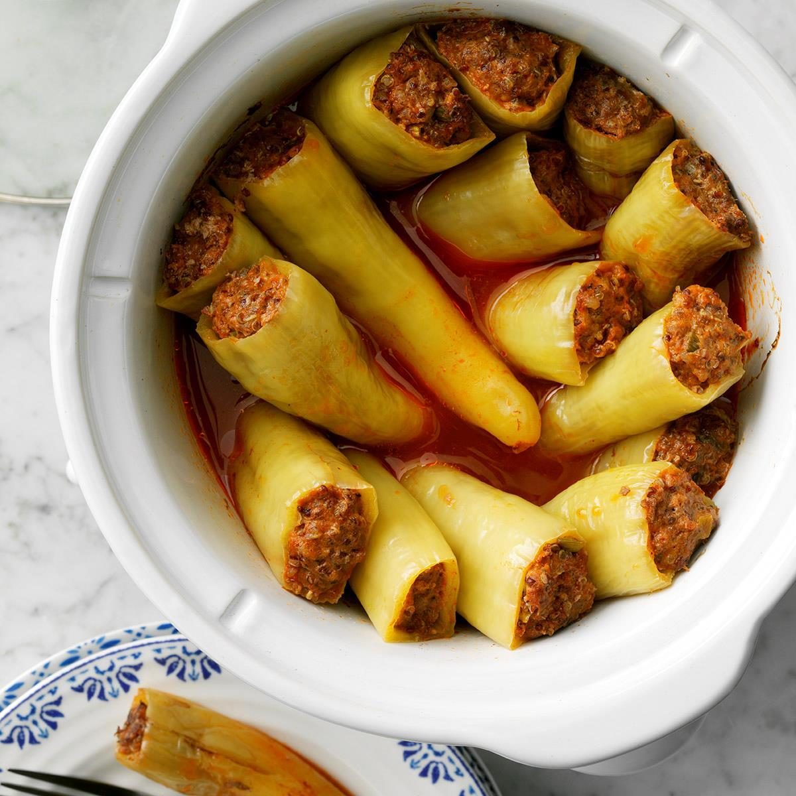

Stuffed Banana Peppers

My variation of an old Southern Living recipe -
a double recipe, will fill a Dutch oven and make
plenty for an extended family dinner.
Ingredients
- 8 banana peppers
- 2 tablespoons butter
- ½ cup chopped onion
- ½ cup chopped celery
- 1 (28 ounce) can crushed tomatoes
- 1 (8 ounce) can tomato sauce
- 2 cloves garlic, minced
- 2 ½ teaspoons salt, divided
- 1 teaspoon dried basil
- 1 teaspoon dried oregano
- ½ teaspoon ground black pepper, divided
- ½ cup grated Parmesan cheese
- 1 large egg
- 1 teaspoon Worcestershire sauce
- 1 pound hot Italian sausage
- 1 pound mild Italian sausage
- 1 ½ cups bread crumbs
Steps
- Cut off the tops of peppers. Chop edible portions of
the tops; set aside. Use a small knife to slice lengthwise
through one side of each pepper; remove ribs and seeds.
- Bring a large pot of salted water to a boil. Add peppers,
reduce heat, and simmer until tender but still firm, about
5 minutes. Drain and set aside.
- Heat butter in a medium skillet over medium heat. Sauté
reserved chopped pepper, onion, and celery in hot butter
until tender, 3 to 5 minutes. Stir in crushed tomatoes,
tomato sauce, and garlic. Season with 1 1/2 teaspoons salt,
basil, oregano, and 1/4 teaspoon black pepper.
Simmer uncovered for 10 minutes.
- Preheat the oven to 350 degrees F (175 degrees C).
- Meanwhile, combine Parmesan cheese, egg, Worcestershire
sauce, 1 teaspoon salt, and 1/4 teaspoon black pepper in
a large bowl. Mix in hot sausage, mild sausage, bread crumbs,
and 1 cup tomato sauce mixture until well combined.
- Fill each pepper with sausage mixture using a piping bag or
sausage stuffer. Place in a 3-quart casserole dish; pour
remaining tomato sauce mixture over peppers.
- Bake uncovered in the preheated oven until sauce is bubbly and
sausage is cooked through, about 1 hour. An instant-read
thermometer inserted into the filling should read at least 160
degrees F (72 degrees C).
- Eat it up!! Hope you enjoy 🌶️